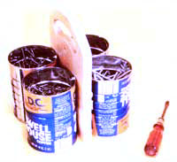
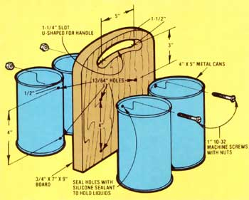

What has four cans, a handle, and goes anywhere? Why, Mother's "odds and ends" carrier, that's what. Got some shingles to tack down on the roof, a pesky piece of molding that won't stay put, or even an ornery machine that needs adjusting before it'll start? Well, the tin-can "toter" you see here can help you with all these chores - plus a heap more, if you'll let it!
And you can whip one up in a jiffy from almost any four recycled metal containers (the size of the cans isn't really critical, as long as they're at least five inches tall and no more than four inches in diameter), a slab of wood which measures about 3/4-by-7-by-9 inches, and four 1-inch long 10-32 machine screws with nuts.
Use a hole saw to drill two 1 1/4-inch holes five inches apart and one and one-half inches down from the "top" (one of the 7-inch edges) of the board. Next measure three inches clown from the center of the 1 1/4-inch holes and drill a pair of 13/64-inch holes side by side and also spaced five inches apart. Another set of 13/64-inch holes - again, five inches apart - are then drilled through the piece of wood four inches below the first pair.
Carefully trim out the curved section of wood between the two 1 1/4-inch holes with a coping saw, round off the corners of the "handle," sand the whole board smooth, and give the wood a coat or two of polyurethane or a paint of your choice.
Finally, remove one end of each can (if the ends haven't already been taken off), drill two 13/64-inch holes In the side of each container to match the holes you've already cut in the wooden handle (the top holes in the carrier shown here were drilled a half inch below the cans' upper lips), and fasten the containers - one pair at a time - to the board with the machine screws and nuts.
You've got it! A simple, low-cost, "build it in fifteen minutes from scrap materials" toter that'll keep supplies of four different-sized nails, screws, bolts or what-have-you at your fingertips - no matter where a shop project might take you. And if you seal those bolt attachment holes with a silicone sealant, you can even carry up to four different colors of paint in this little rig at one time too. Which can be awful handy when you wanna make just one trip up on the roof and trim out shingles, fascia boards, an antenna and the waterproofing around the chimney all at the same time!
|
 MOTHER EARTH NEWS STAFF With four recycled cans, a small board and a few machine screws you can make this handy carrier in no time. |
 MOTHER EARTH NEWS STAFF Construction diagram for Mother's tin-can toter. |
|